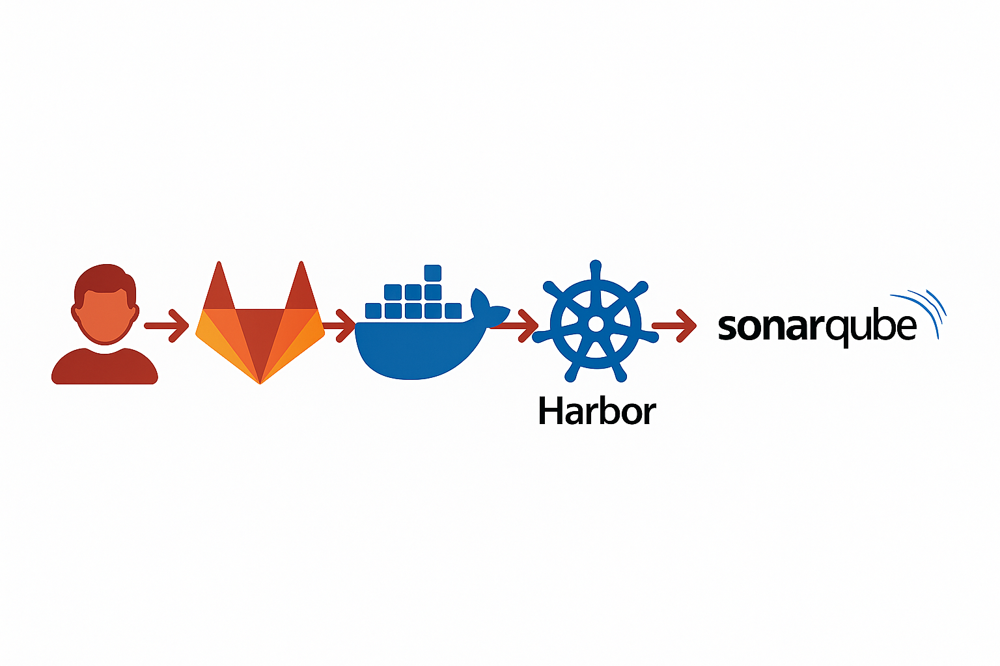

Pourquoi un pipeline DevSecOps ?
Le pipeline CI/CD est le coeur de l'automatisation dans un projet DevSecOps. Il permet d'assurer une intégration continue, tout en intégrant des contrôles de sécurité à chaque étape : compilation, analyse de code, scan de vulnérabilités, tests dynamiques... Le but est d'identifier les problèmes de sécurité ou de qualité dès le moment où le code est poussé.
Vue d'ensemble du pipeline
| Étape | Outils | Objectif |
|---|---|---|
| build | Docker | Créer une image de l'application et l'envoyer dans Harbor (registre privé) |
| scan | Trivy, osv-scanner, GitLeaks | Détecter les vulnérabilités, dépendances non sûres et secrets exposés |
| quality | SonarQube | Analyser la qualité du code source (bugs, duplications, conventions, etc.) |
| zap | OWASP ZAP (optionnel) | Simuler des attaques web pour détecter des failles dynamiques comme XSS, SQLi |
Schéma du pipeline
Ce schéma représente le pipeline DevSecOps intégré : un push GitLab déclenche le build de l’image Docker, son push dans Harbor, puis une analyse du code source avec SonarQube. Chaque étape automatise le contrôle qualité et sécurité dès le développement.
Chaque étape est exécutée dans un conteneur Docker isolé, lancé automatiquement par GitLab Runner.